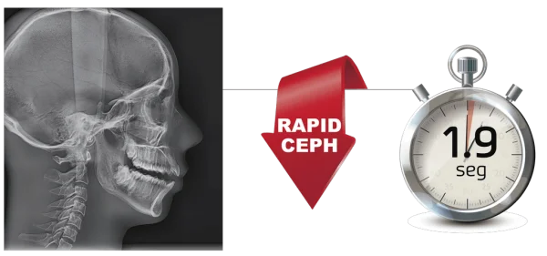
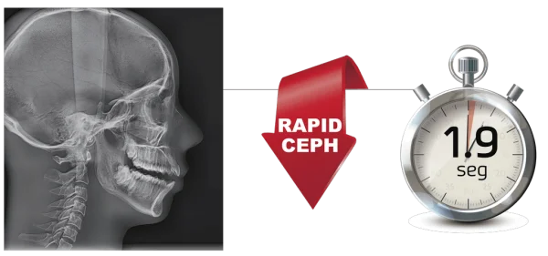
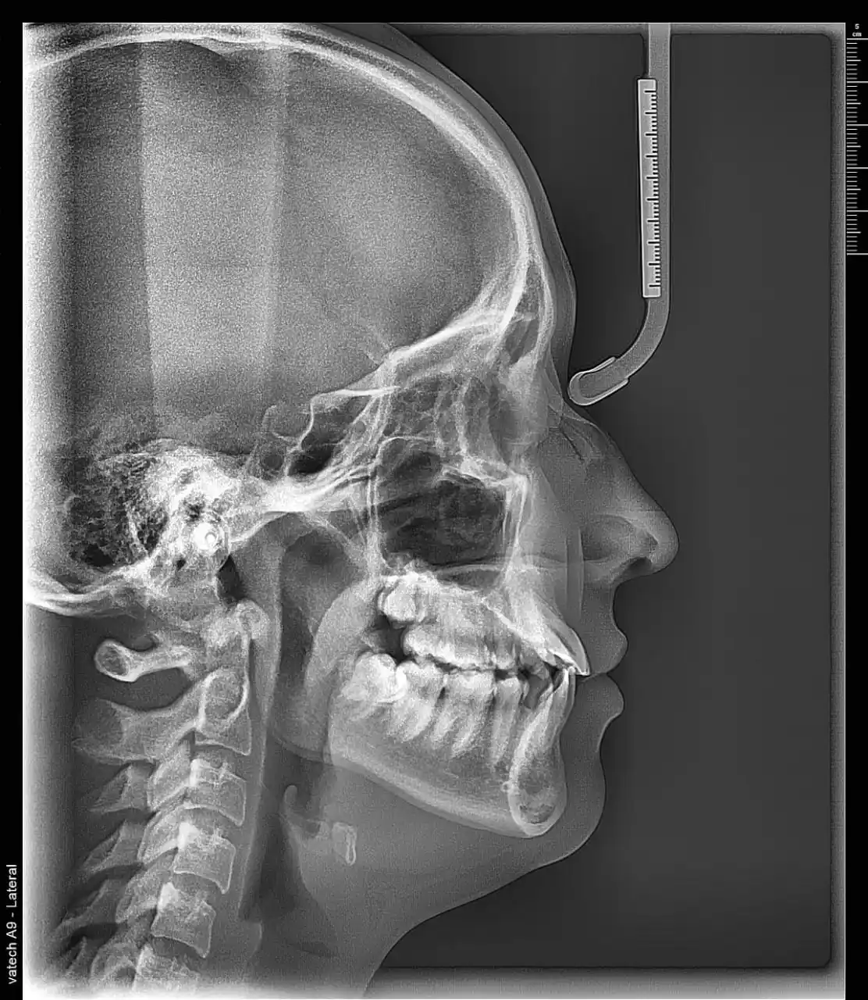
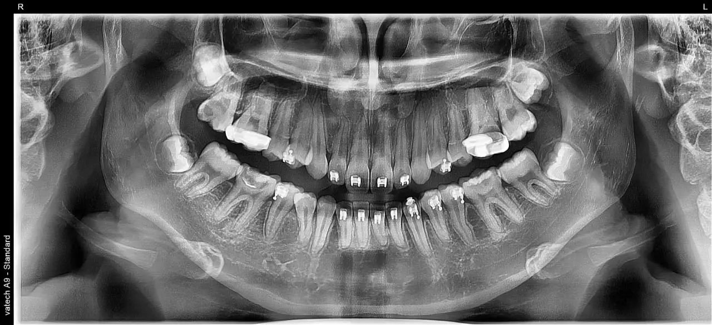
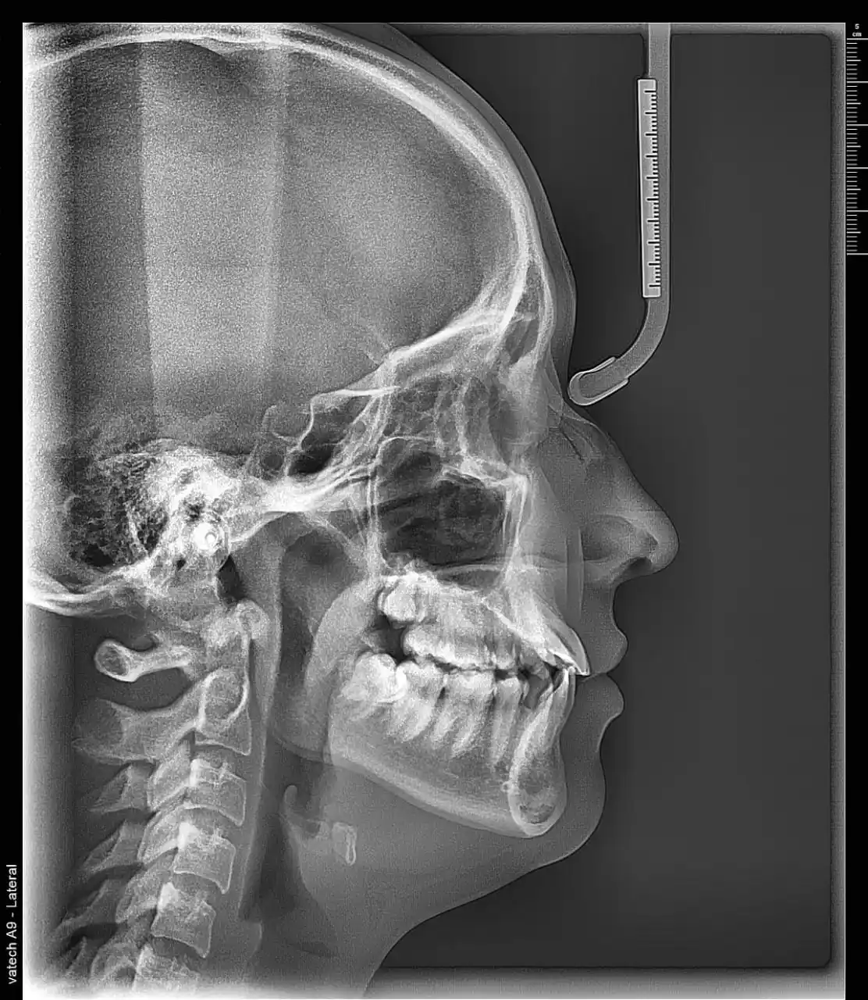
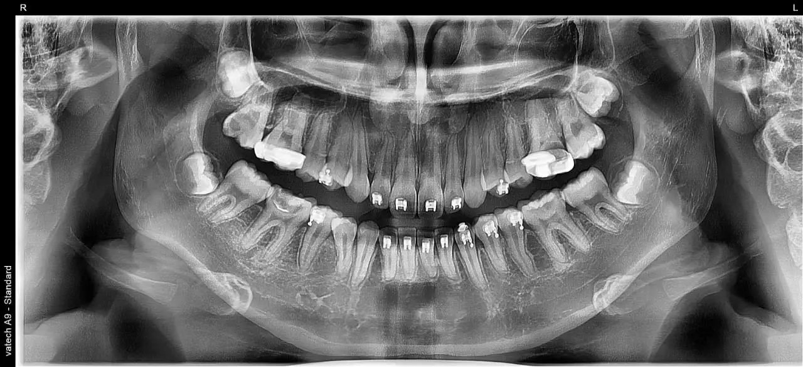

En nuestra clínica, nos comprometemos a ofrecerte la mejor tecnología para el cuidado de tu salud.
Con nuestro nuevo tomógrafo Vatech A9, podemos obtener imágenes detalladas y de alta calidad, lo que nos permite realizar
diagnósticos precisos no solo en odontología, sino también en otras áreas de la salud.
Este equipo avanzado nos ayuda a capturar tomografías en 3D que muestran tanto los dientes como las estructuras óseas cercanas,
lo que facilita la detección de problemas dentales complejos, como infecciones, fracturas o dientes impactados.
Además, este tipo de imágenes también son útiles para detectar posibles problemas médicos en otras partes del cuerpo, brindándote una atención más completa y segura.
 

 


